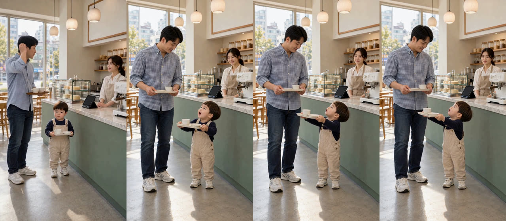
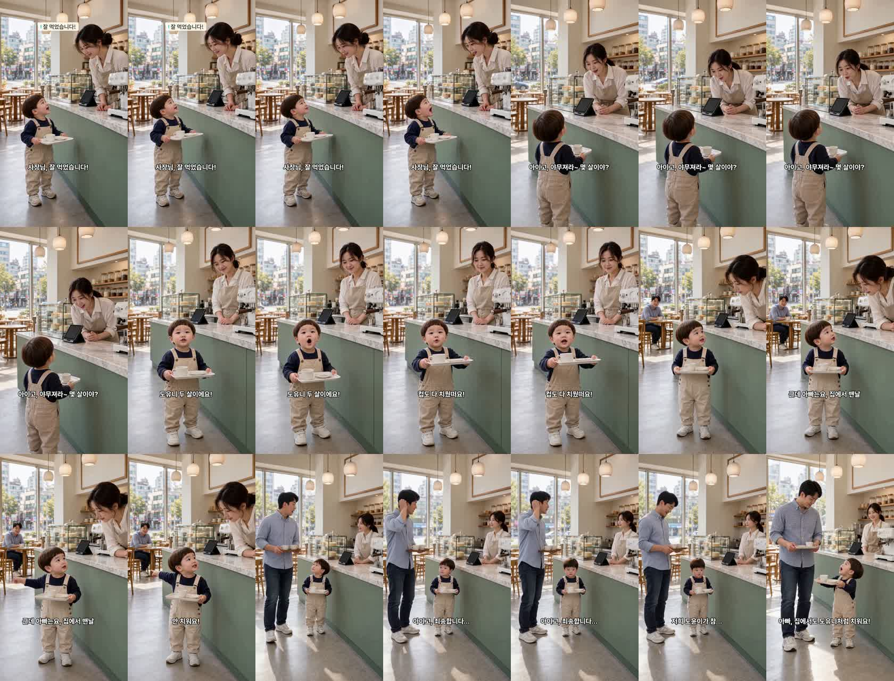
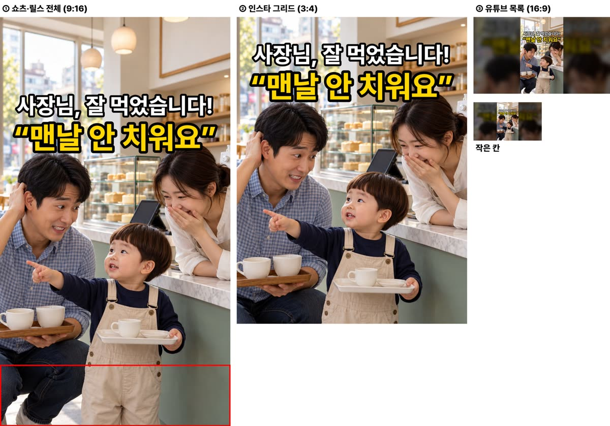

카페 쟁반 편 완성본 (R6) — 확인 부탁
25.2초 · 6컷 · 정식 Omni · 등록 안 함 — 대표님이 보시고 정하십니다.
제목(안): «카페 사장님께 쟁반 들고 간 두 살이 한 말»
소재 출처
인스타 @jisu_table «26개월이 너무 야무짐»(337만·212만 재생, 10-03 인스타 육아 릴스 조사)에서 «어른 일을 야무지게 해내는 아기» 장치만 빌렸습니다. 원본 대사·가족 사건은 쓰지 않았습니다.
대본
- 도윤 «사장님, 잘 먹었습니다!»
- 사장님 «아이고, 야무져라~ 몇 살이야?»
- 도윤 «도유니 두 살이에요! 컵도 다 치웠떠요!»
- 도윤 «근데 아빠는요, 집에서 맨날 안 치워요!»
- 아빠 «아이고, 죄송합니다… 저희 도윤이가 참…»
- 도윤 «아빠, 집에서도 도유니처럼 치워요!»
자체 점검
- 배경: 카페 세트 정본과 같음(1차 키프레임에서 계산대가 곡선으로 나와 직선으로 고쳐 다시 그림)
- 자리: 도윤 계산대 앞 · 사장님 계산대 뒤 · 아빠 4컷 창가 테이블 → 5·6컷 도윤 옆 — 컷 사이 튀지 않음
- 시작 그림 이탈 검사 6컷 통과(작업별 씨앗 적용 후 첫 편)
- 도윤 목소리 395 · 533 · 400 · 364Hz — 전부 경고선(330Hz) 위
대표님이 봐 주셔야 할 것
- 아빠 쟁반이 5컷은 갈색 나무 쟁반(컵 2개), 6컷은 흰 쟁반(컵 1개)으로 바뀝니다. 두 컷의 시작 그림이 달라서 생긴 차이이고, 고치려면 시작 그림을 다시 그려 6컷을 모두 다시 뽑아야 합니다.
- 아기 발음 «도유니·치웠떠요»가 받아쓰기에서는 «도윤이·치웠어요»로 들렸습니다. 직접 들어 봐 주세요.

1초 간격 전체

썸네일(쇼츠 · 인스타 그리드 · 유튜브 목록)
